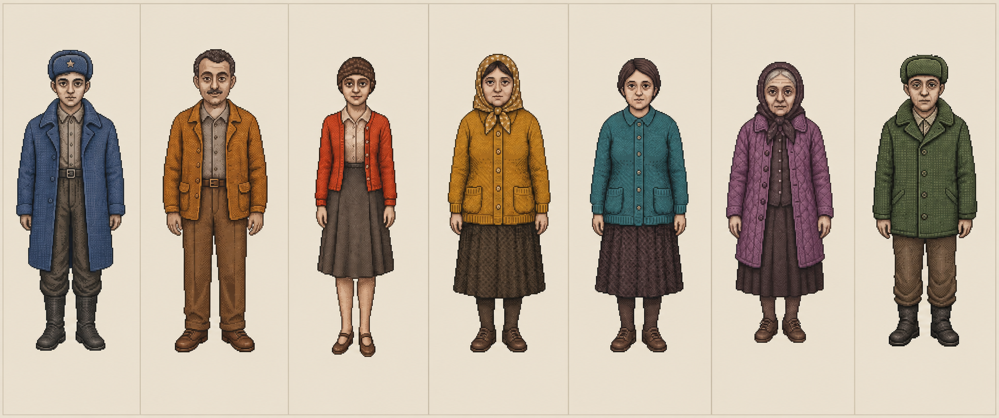

014G / 1P
R-12林默申请共同居住，沈青禾的跨区身份成为钩子。
玩家每天处理五宗行政需求。大多数只是城市的普通生活，少数表单却会反复带回同一批人、同一组异常日期，以及一场被推迟承认的事故。

每一条线都可以独立理解，但只有把人物、表单和机器记录连接起来，玩家才会看见完整问题。
剧情位置刻意错开。只有第一天把钩子放在第五单；之后剧情可以出现在一天的中段、开头或结尾。
任何单一文件都不足以揭露真相。玩家只能通过不同人物携带的材料建立交叉印证。
人物不是示意头像，文件也不是抽象方块。页面直接使用项目里的立绘、表单与手册。